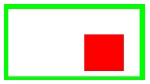
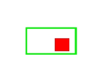

atlc expects to find the transmission line's cross section to be found in a standard bitmap (.BMP or .bmp) file. There are several forms of bitmaps, some grayscale, some 8-bit colour (256 colours), some 16 bit colour, some 24-bit colour. Some bitmaps are compressed. atlc expects to see uncompressed 24-bit bitmaps. This may sound restrictive, but in practice most graphics software can save such files.
Since the form of the input file is critical, we will discuss this a little. 24-bit images have 8 bits per colour (8 for red, 8 for green and 8 for blue). Hence there are 256 shades of red, 256 shades of green and 256 shades of blue, giving a total of 256*256*256=16,777,216 possible colours. It follows that 3 bytes of data are needed to describe each pixel (ignoring compressed images which are not supported). Each bitmap has a small header of around 56 bytes, followed by 3 bytes for every pixel. The minimum possible length for a bitmap of x by y pixels is then 56+3*width*height (bytes). In practice, images are usually a little larger than this, as there is some padding. If your images are not at least this size, something is wrong! For a more detailed discussion of bitmap files (unnecessary for using atlc), see this HTML page I found on the web somewhere. atlc needs. atlc as one conductor, the one on the right will not. Hence it is essential to check the colours produced by your graphics package not only look about right, but are exactly right. |  |  |
atlc
The following colours are predefined in atlc. These can be used, without the user specifying what they mean.
| Red live conductor RGB=0xff0000 rgb=255,0,0 |
Green ground conductor RGB=0x00ff00 rgb=0,255,0 |
Blue -1v conductor RGB=0x0000ff rgb=0,0,255 |
| White er=1.0 Vacuum RGB=0xffffff RGB=255,255,255 |
Pink er=1.0006 Air RGB=0xffcaca RGB=255,202,202 |
Light Blue er=2.1 PTFE RGB=0x8235ef RGB=130,52,255 |
Gray er=2.2 RT duroid 5880 RGB=0x8e8e8e RGB=142,142,142 |
Mauve er=2.33 Polyethelene RGB=0xff00ff RGB=255,0,255 |
|
| Yellow er=2.5 Polystyrene RGB=0xffff00 RGB=255,255,0 |
Sandy er=3.3 PVC (at 1MHz) RGB=0xefcc1a RGB=239,203,27 |
Brown er=3.335 Epoxy resin RGB=0xbc7f60 RGB=188,127,96 |
Light yellow er=3.7 FR4 PCB RGB=0xdff788 RGB=223,247,136, |
Terquoise er=4.8 Fibreglass PCB RGB=0x1aefb3 RGB=26,239,179 |
|
| Dark grey er=6.15. RT duroid 6006 RGB=0x696969 RGB=142,142,142 |
Light gray er=10.2 RT duroid 6010 RGB=0xdcdcdc RGB=240,240,240 |
Dark Orange er=100 Er of 100.0 RGB=0xd5a04d RGB=213,160,77 |
atlc, having another permittivity very close to 1.0 is useful, as for test purposes. The figures for the plastics given above are only approximate. The permittivity of plastics are usually frequency dependant and temperature dependant.
atlcatlc with the following command line option.atlc is written and supported by Dr. David Kirkby (G8WRB)
{kind=link}